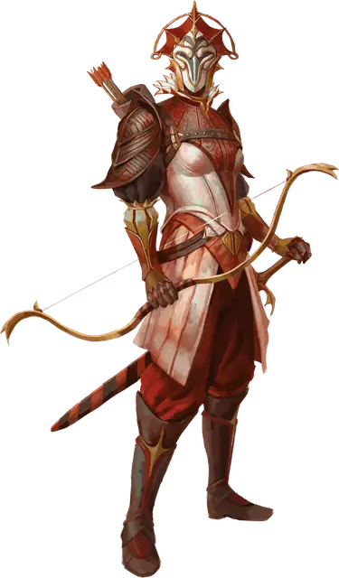

Астральный эльф воитель
Astral Elf Warrior
Средний Гуманоид, любое мировоззрение

Класс Доспеха 16 (кираса)
Хиты 58 (13к8)
Скорость 30 футов
| мод | спас | ||
|---|---|---|---|
| СИЛ | 12 | +1 | +1 |
| ЛОВ | 15 | +2 | +4 |
| ТЕЛ | 10 | +0 | +0 |
| мод | спас | ||
|---|---|---|---|
| ИНТ | 16 | +3 | +3 |
| МДР | 16 | +3 | +5 |
| ХАР | 15 | +2 | +2 |
Навыки Выживание +5, Запугивание +4
Чувства тёмное зрение 60 футов, пассивное Восприятие 13
Языки Общий, Драконий, Небесный, Эльфийский
Опасность 3 (700 опыта)
Бонус мастерства +2
Особенности
Наследие фей. Эльф с преимуществом совершает спасброски от состояния очарованный, и его невозможно магически усыпить.
Необычная природа. Эльф не нуждается во сне.
Действия
Мультиатака. Эльф совершает две атаки Длинным мечом или Длинным луком.
Длинный меч. . Рукопашная атака оружием: +3 к попаданию, досягаемость 5 футов, одна цель. Попадание: 5 (1к8 + 1) рубящего урона или 6 (1к10 + 1) рубящего урона, если используется двумя руками плюс 10 (3к6) урона излучением.
Длинный лук. Дальнобойная атака оружием: +4 к попаданию, дистанция 150/600 футов, одна цель. Попадание: 6 (1к8 + 2) колющего урона плюс 10 (3к6) урона излучением.
Описание
Астральные эльфы воители управляют эльфийскими магическими кораблями и защищают крепости своего народа на всем Астральном плане.
Астральные эльфы
Давным-давно некоторые эльфы отправились на Астральный план, чтобы стать ближе к своим богам. Там они перестали стареть и могли бесконечно долго существовать без пропитания.
Они стали одними из первых существ, заселивших Серебряную пустоту. Астральным эльфам пришлось столкнуться с жестокими соседями и странными гостями, когда другие исследователи достигли звезд. На протяжении веков астральные эльфы боролись с многочисленными захватчиками, включая псурлонов, свежевателей разума и гитъянки. Общаясь с другими расами, астральные эльфы обычно прячут свои лица под богато украшенными масками, становясь безликими продолжениями своих богов. Их безграничная преданность пантеону эльфийских богов была вознаграждена божественной силой. Например, боги наделили астральных эльфов воителей способностью наполнять энергией звёздного света своё оружие, а лидеров астральных эльфов — способностью накладывать заклинания и призывать солнечных драконов.
Астральные эльфы бороздят Астральное море и Дикий космос на кораблях собственной конструкции. Эти корабли создаются из кристаллов, собранных в системах Дикого космоса и скрепленных органическим материалом растительного происхождения, затвердевающим подобно керамике. Эльфы формируют из этой субстанции различные формы, создавая звёздных мотыльков (см. «Путеводитель астрального путешественника») и другие суда. Также эльфы видоизменяют окаменевшие тела мертвых богов, обнаруженные в Серебряной пустоте, превращая их в парящие города и цитадели.
Несмотря на то, что Серебряная пустота — дом эльфов, они часто отправляются в системы Дикого космоса и размещают свои корабли и цитадели на орбите вокруг звёзд. Для этого есть несколько причин. Соседство с звездой позволяет астральным эльфам заключать соглашения с солнечными драконами и собирать звездный свет, используемый эльфами для выращивания кристаллов и ремонта своих кораблей. Но что важнее, астральные эльфы используют время вне Глубокого Астрала, для пополнения своей численности, рожая и воспитывая детей.
Многим астральным эльфам тысячи, а в некоторых случаях десятки тысяч лет. Каким бы не был их нрав, долголетие даёт астральным эльфам уникальное чувство восприятия времени, которое мало кто из других видов существ может себе представить. Неважно, выбрали ли астральные эльфы жить в тихом созерцании или же отправились исследовать просторы Мультивселенной, они склонны смотреть на вещи сквозь призму того, что время для них почти не имеет значения.